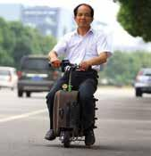
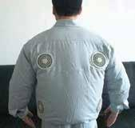
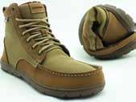
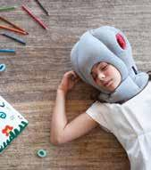
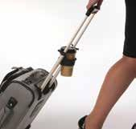

5 fun products you’ve got to get!
❶ Think about it
Have you bought anything new lately? What was it? What are some of your favourite devices or gadgets? What do you use them for? Have you read about any new inventions? What were they?
❷ Pre-reading
Look at the pictures of the products. What do you think they can do? Why are they special? What problems will they solve? Make notes.
❸ Listening
Listen to the article many times, and compare your ideas from the Pre-reading activity.
Have you seen any unusual products lately? The Daily Mail recently featured a selection of imaginative new inventions. Here are a few of them.
The Suitcase Scooter is a suitcase that can be converted into an electric scooter. It has a speed of up to about 20 km/h, and it was designed by Chinese Inventor He Liangcai. The scooter includes a throttle, brakes, lights, a GPS, a horn and a theft alarm, and has enough power to travel up to a distance of about 60 kilometres. The Kuchofuku Air-Conditioned Cooling Jacket comes with two small battery-powered fans which blow cool air around your body. Designed by Hiroshi Ichigaya of Japan, the jacket allows you to stay cool with two 10-cm fans which are built into the pockets of the jacket. You never know when you might need a pair of sturdy boots. But the problem is they just take up so much luggage space. But not any longer. Lems Boulder Boots weigh about 300 grams and are the lightest boots in the world. Made of nylon and leather, they can be squashed down and easily stuffed into a bag. The Ostrich Pillow can completely isolate you from the outside world. It’s perfect if you’re waiting for a flight or commuting home from work as you can shut off all surrounding noise. The strange-looking pillow was designed by Key Portilla-Kawamura and Ali Ganjavian of Studio Banana. Have you ever tried rushing to catch a plane or train with a cup of hot coffee in your hands? With the Mobile Cup Holder, you can move at great speed without spilling your drink. The drinks holder was invented by emergency room nurse Karen Porte. The device fits onto most roller luggage and holds the cup between the retractable handles. ✪The Suitcase Scooter

The Air-Conditioned Cooling Jacket

The Collapsible Boot

The Ostrich Pillow

The Mobile Cup Holder

❹ Reading
Read the article. Then, write the following abbreviated names of the products next to each statement: Scooter, Jacket, Boot, Pillow, Cup
- It only weighs about 300 grams.
- It can travel at speeds of up to 20 km/h.
- With this product, you won’t spill your coffee.
- It was designed by an inventor from Japan.
- It can completely isolate you from the outside world.

Watch the Suitcase Scooter in action. Search youTube for “Rideable suitcase scooter invented in china”.